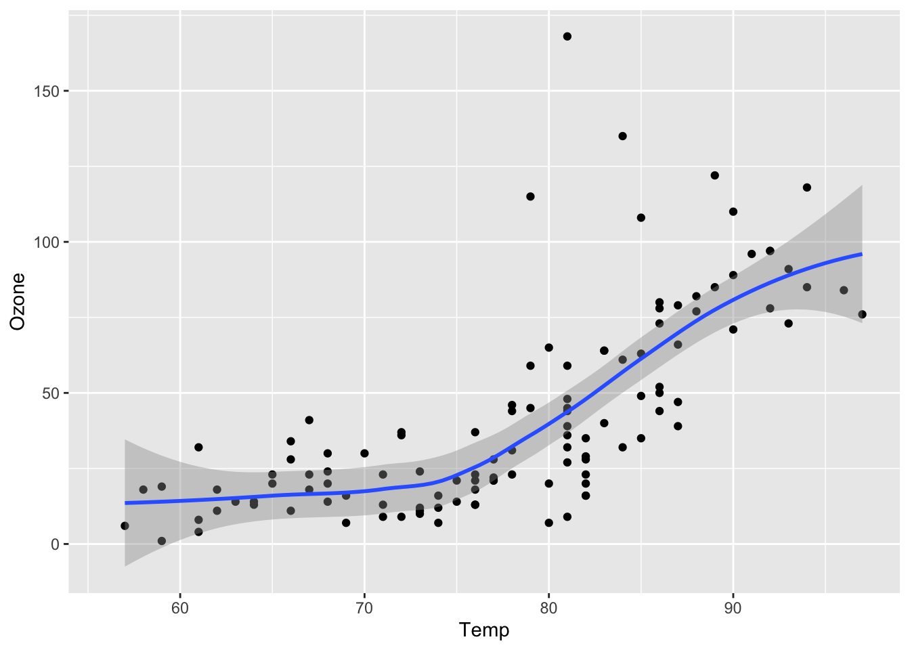

# label: example-code-introduction
#| echo: fenced
#| output-location: column
#| label: fig-airquality
#| fig-cap: Temperature and ozone level.
#| warning: false
library(ggplot2)
ggplot(airquality, aes(Temp, Ozone)) +
geom_point() +
geom_smooth(method = "loess"
)`geom_smooth()` using formula = 'y ~ x'Warning: Removed 37 rows containing non-finite values (`stat_smooth()`).Warning: Removed 37 rows containing missing values (`geom_point()`).


 ## YAML Auto-completion
## YAML Auto-completion